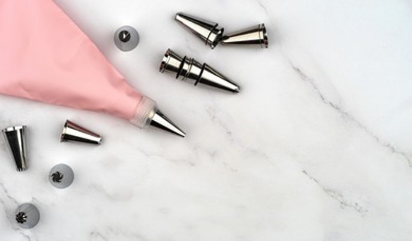

Top 10 recommended Cake Decoration tools
Just like having the right ingredients will ensure you get a great tasting cake, having the right tools helps to ensure you end up with a great looking cake too.Here are the top 10 cake decoration tools that will take you to the next level and help you improve your cake decoration skills.
1. Cake Decorating Turntable
We will start off our list with a cake decorating turntable. This is a big game changer for anyone new to the world of decorating cakes. Definitely something to consider buying!
2. Cake Scraper / Icing Smoother

Another tool to consider having is a cake scraper. A cake scraper is a tool used to smooth out the sides of your cakes. This can make a big difference in your finishes.
3. Icing Spatulas
To go along with the scrapers and turntable, you might also consider having a good set of icing spatulas - one straight and one offset. The straight spatula can be used for the sides of the cake and the offset spatula for the center and top of the cake.
4. Stand Mixer

A stand mixer is like a right arm in your kitchen. Although being quite expensive, a stand mixer can help you do almost everything in pastry making; Knead, Whip, Cream! Definitely a long term investment to be considered.
5. Baking Pans / Cake Moulds
One more essential to invest in to step up your cake game are quality cake pans. Fat Daddio Pans are recommended as the brand specializes in anodizing their pans. This means that the pans evenly distributes heat well which gives you more even bake in your cakes!
6. Cake Leveler
Simply adjust the level of the cake leveler and easily cut your cakes into several layers of sponge cakes of the same thickness. Why make cutting cake evenly difficult when you can use a cake leveler!
7. Pastry Bags & Decorating Tips
No pastries without pastry bags! Up to you if you prefer having reusable pastry bags or disposable ones. Decorating tip are available in a variety of shapes and sizes meaning you can ice your cakes and cupcakes with all sorts of gorgeous designs.
8. Non-Stick Rolling Pins
Non-stick rolling pins is a must have in your kitchen for rolling out icing, modelling paste, flower paste, and pretty much everything else that can be rolled for your cake decoration.
9. Cake Lifter
Well nothing much to say here except; why wonder how to move your cake once you are done decorating it when you can have a cake lifter?
10. Drip Bottle
Want to have a drip effect on your cake? Buy yourself a drip bottle!